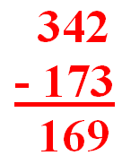
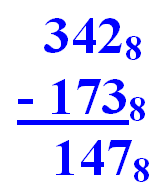

|  | by Tom Lehrer |
 |
Some of you who have small children may have perhaps been put in the embarrassing position of being unable to do your child's arithmetic homework because of the current revolution in mathematics teaching known as the New Math. So as a public service here tonight, I thought I would offer a brief lesson in the New Math. Tonight, we're gonna cover subtraction.
This is the first room I've worked for a while that didn't have a blackboard, so we will have to make do with more primitive visual aids, as they say in the ed biz.
Consider the following subtraction problem, which I will put up here: 342 minus 173. Now, remember how we used to do that: But in the new approach, as you know, the important thing is to understand what you're doing, rather than to get the right answer. Here's how they do it now:
You can't take three from two, Two is less than three, So you look at the four in the tens place. Now that's really four tens So you make it three tens, Regroup, and you change a ten to ten ones, And you add 'em to the two and get twelve, And you take away three, that's nine. Is that clear?
Now instead of four in the tens place You've got three, 'Cause you added one, That is to say, ten, to the two, But you can't take seven from three, So you look in the hundreds place.
From the three you then use one To make ten ones... (And you know why four plus minus one Plus ten is fourteen minus one? 'Cause addition is commutative, right!)... And so you've got thirteen tens And you take away seven, And that leaves five...
Well, six actually... But the idea is the important thing!
Now go back to the hundreds place, You're left with two, And you take away one from two, And that leaves...?
Everybody get one? Not bad for the first day!
Hooray for New Math,
New-hoo-hoo Math,
It won't do you a bit of good to review math.
It's so simple,
So very simple,
That only a child can do it!
Now, that actually is not the answer that I had in mind, because the book that I got this problem out of wants you to do it in base eight. But don't panic! Base eight is just like base ten really - if you're missing two fingers! Shall we have a go at it? Hang on...
You can't take three from two, Two is less than three, So you look at the four in the eights place. Now that's really four eights, So you make it three eights, Regroup, and you change an eight to eight ones And you add 'em to the two, And you get one-two base eight, Which is ten base ten, And you take away three, that's seven. Ok?
Now instead of four in the eights place You've got three, 'Cause you added one, That is to say, eight, to the two, But you can't take seven from three, So you look at the sixty-fours...
Sixty-four? "How did sixty-four get into it?" I hear you cry! Well, sixty-four is eight squared, don't you see? (Well, ya ask a silly question, ya get a silly answer!)
From the three, you then use one To make eight ones, You add those ones to the three, And you get one-three base eight, Or, in other words, In base ten you have eleven, And you take away seven, And seven from eleven is four! Now go back to the sixty-fours, You're left with two, And you take away one from two, And that leaves...?
Now, let's not always see the same hands! One, that's right. Whoever got one can stay after the show and clean the erasers.
Hooray for New Math,
New-hoo-hoo Math!
It won't do you a bit of good to review math.
It's so simple,
So very simple,
That only a child can do it!
Come back tomorrow night...we're gonna do fractions!
Y'know, I've often thought I'd like to write a mathematics textbook someday because I have a title that I know will sell a million copies; I'm gonna call it Tropic of Calculus.
Postscript: Tom Lehrer wrote this in 1965.
Comments?
Send e-mail.Back to
topGo back to
Home PageGo back to
Contents